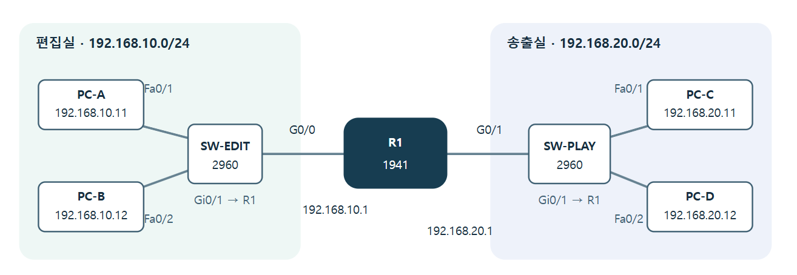

PACKET TRACER LAB 시작
처음 만드는 Cisco Packet Tracer · 설치부터 동작 원리·장비 확장·장애 복구까지
01 → 07
PC 4대, 스위치 2대, 라우터 1대.
편집실 · 192.168.10.0/24 송출실 · 192.168.20.0/24 PC-A 192.168.10.11 PC-B 192.168.10.12 SW-EDIT 2960 SW-PLAY 2960 PC-C 192.168.20.11 PC-D 192.168.20.12 R1 1941 G0/0 G0/1 192.168.10.1 192.168.20.1 Fa0/1 Fa0/2 Fa0/1 Fa0/2 Gi0/1 → R1 Gi0/1 → R1 대상: 네트워크 입문자 실습: 1인 1PC 진행: Windows 중심 휴식 5분 포함
강사 메모 오늘의 목적은 명령어 암기가 아니라 설계 → 연결 → 설정 → 검증 순서를 익히는 것입니다. 그림의 방송실은 이해를 돕는 예시이며 실제 방송 스트림이나 장비 제어를 구현하는 수업은 아닙니다.PACKET TRACER LAB 시작
오늘의 도착점과 준비물 설계·연결·동작 원리 확인·확장·장애 복구까지 직접 수행합니다.
수업이 끝나면 장비와 IP 주소를 보고 네트워크를 설계합니다. 장비를 놓고 올바른 포트에 케이블을 연결합니다. PC와 라우터를 설정해 다른 네트워크로 ping을 보냅니다. 잘못된 게이트웨이를 찾아 복구하고 .pkt 파일을 저장합니다. 시작 전 준비 설치 가능한 데스크톱·노트북과 마우스 인터넷 연결, Cisco 계정용 이메일 PC의 설치 권한 또는 실습실 관리자 지원 작업 폴더: 문서 → PT_Lab 교안과 Packet Tracer를 나란히 띄울 화면 교안 사용법: 이전·다음 으로 진행하거나 전체 보기 로 펼쳐 보세요. 정답은 눌러서 확인하며, 인쇄 / PDF 저장 으로 전체 교안을 출력할 수 있습니다.
강사 메모 계정 인증 지연에 대비해 수업 전 이메일 수신 및 설치 권한을 확인해 둡니다. 설치 자체는 수업 안에서 진행합니다. 강의용 화면 그림은 직접 그린 안내도이며 특정 버전의 실제 캡처가 아닙니다.PACKET TRACER LAB 설치
01. 공식 사이트에서 준비하기 다운로드는 Cisco Networking Academy에서 시작합니다.
웹 브라우저에서 Cisco Resource Hub · Lab Downloads 를 엽니다. 로그인 안내가 나오면 Cisco 계정으로 로그인합니다. 계정이 없으면 Sign up / Create account 에 해당하는 가입 메뉴에서 계정을 만듭니다. 이메일 확인 요청이 있으면 받은 편지함에서 인증을 마친 뒤 다운로드 화면으로 돌아옵니다. Packet Tracer 항목에서 자신의 운영체제에 맞는 설치 파일을 내려받습니다. Windows에서는 페이지에 표시된 Windows용 설치 파일을 선택합니다.다운로드 항목이 보이지 않으면: 로그인 상태를 확인 → Resource Hub 주소를 다시 열기 →
공식 Packet Tracer 안내 에서 이동하기. 입문 과정 등록 안내가 실제 표시되면 해당 안내에 따라 진행하세요.
공식 경로 확인: 2026-09-29. 배포 버전, 버튼 이름, 로그인 방식은 바뀔 수 있으므로 특정 버전 번호를 고정하지 않습니다. 스마트폰·태블릿용 실습이 아닙니다.
강사 메모 로그인 후의 개인별 화면과 최신 설치 파일 버전은 이 교안 제작 시 직접 확인하지 않았습니다. 공식 설치 문서의 배포 경로를 기준으로 안내합니다. 학급 전체는 같은 버전을 사용하세요.PACKET TRACER LAB 설치
02. 설치하고 처음 실행하기 Windows 기준 · 기본 설치 경로를 그대로 사용합니다.
다운로드 폴더에서 받은 설치 파일을 더블클릭합니다. 권한 확인 창이 나오면 학교·기관의 설치 절차에 따라 진행합니다.사용권 계약을 읽고 동의하면 I accept the agreement → Next 를 누릅니다. 설치 폴더·시작 메뉴·바로가기 화면은 기본값을 확인하며 Next → Install 로 진행합니다. 설치가 끝나면 Finish 를 누르고 Packet Tracer를 실행합니다. 로그인이 요청되면 화면에 표시된 로그인 경로를 선택해 같은 Cisco 계정으로 인증합니다. 브라우저에서 인증했다면 앱으로 돌아옵니다. 흰 작업 공간과 하단의 장비 선택 영역이 보이면 준비 완료입니다. 완료 기준: Packet Tracer에서 File → New 를 눌러 빈 작업 공간을 열 수 있다.
macOS·Ubuntu 사용자는 Cisco 공식 운영체제별 설치 안내 로 설치하고 다음 단계에 합류합니다. 지원 OS·요구 사양은 배포 페이지에서 확인하세요.
강사 메모 인증 메일이 늦으면 스팸함과 이메일 오타를 확인합니다. 관리 PC에서 설치가 막히면 관리자에게 요청하거나 준비된 실습 PC를 이용합니다. 설치가 끝난 수강생은 다음 장에서 화면 위치를 미리 익힙니다.PACKET TRACER LAB 설치
03. 화면에서 네 곳만 찾기 Logical 작업 공간과 Realtime 모드에서 시작합니다.
① File → New / Save As 상단 메뉴
② Logical 작업 공간 장비를 놓고 케이블로 연결하는 곳
③ 장비 선택
④ 실행 모드
화면 위치를 익히기 위한 안내도입니다. 실제 화면의 색·아이콘·메뉴 배치는 버전에 따라 다를 수 있습니다.
상단에서 Logical , 우측 하단에서 Realtime 을 선택합니다. 장비 위를 클릭하면 설정 창이 열리고, 창의 × 로 닫으면 작업 공간으로 돌아옵니다. 배치·연결 도구 사용 후 Esc 를 눌러 선택 상태로 돌아오는 습관을 들입니다. 강사 메모 수강생이 Physical 작업 공간이나 Simulation 모드에 들어가 있지 않은지 확인합니다. 포트가 보이지 않으면 장비 위에 마우스를 올려 장비 정보와 링크를 확인하도록 안내합니다.PACKET TRACER LAB 설계
04. 무엇을 연결할지 먼저 정하기 편집실 2대와 송출실 2대가 서로 통신해야 합니다.
OSI 7 Layer · 통신을 나누어 보는 7계층 계층 주요 역할 · 예시 7 · 응용 사용자 서비스 · HTTP, DNS 6 · 표현 데이터 표현 · 인코딩, 암호화, 압축 5 · 세션 통신 세션의 설정·유지·종료 4 · 전송 프로세스 간 전달 · TCP, UDP, 포트 3 · 네트워크 IP 주소 · 경로 선택 → 라우터 / L3 스위치 2 · 데이터 링크 MAC 주소 · 프레임 전달 → L2 스위치 1 · 물리 비트 신호 전달 · 케이블, 전기·광 신호
스위치 · SW-EDIT / SW-PLAY
라우터 · R1
편집실 · 192.168.10.0/24 송출실 · 192.168.20.0/24 PC-A 192.168.10.11 PC-B 192.168.10.12 SW-EDIT 2960 SW-PLAY 2960 PC-C 192.168.20.11 PC-D 192.168.20.12 R1 1941 G0/0 G0/1 192.168.10.1 192.168.20.1 Fa0/1 Fa0/2 Fa0/1 Fa0/2 Gi0/1 → R1 Gi0/1 → R1 같은 방은 스위치 편집실 PC-A·PC-B는 SW-EDIT에 연결합니다. 송출실 PC-C·PC-D는 SW-PLAY에 연결합니다.
다른 방은 라우터 두 방은 서로 다른 IP 네트워크를 사용합니다. R1의 두 포트가 각각 한 방에 연결되어 네트워크 사이를 이어 줍니다.
이번 범위는 유선 LAN + 수동 IP + 라우터 기본 연결 입니다. 인터넷 연결, DHCP, VLAN, 실제 영상 전송은 추가하지 않습니다.
강사 메모 방송 현장에 연결해 설명하되 실습망은 일반적인 기초 데이터 네트워크입니다. IP 영상 전송의 QoS·멀티캐스트·PTP·이중화까지 다루는 것으로 설명하지 않습니다.PACKET TRACER LAB 설계
05. 주소는 집 주소처럼 읽기 이번 실습은 모든 장비의 서브넷 마스크가 255.255.255.0입니다.
192.168.10. 11
앞의 세 숫자 = 같은 동네 이 실습의 /24 조건에서
마지막 숫자 = 장비 번호 같은 네트워크 안에서는 장비마다 달라야 합니다. 같은 주소를 두 PC에 넣지 않습니다.
항목 뜻 PC-A에서 입력할 값 IP 주소 내 장비의 주소 192.168.10.11 서브넷 마스크 내 네트워크의 범위를 구분 255.255.255.0 (= /24) 기본 게이트웨이 다른 네트워크로 나가는 라우터 주소 192.168.10.1
이 /24 네트워크에서 .0 은 네트워크 주소, .255 는 브로드캐스트 주소이므로 PC에 넣지 않습니다. .1 은 이 실습에서 라우터용으로 정한 값입니다.
강사 메모 앞의 세 숫자가 같다는 규칙은 이 교안의 /24에서만 적용됩니다. 모든 서브넷에 일반화하지 않도록 한 번 짚어 줍니다. DNS는 이번 숫자 IP 기반 통신 시험에 필요하지 않습니다.PACKET TRACER LAB 설계
06. 오늘 사용할 주소표 설정할 때 이 표를 다시 열어 확인하세요.
장비 포트 IPv4 주소 서브넷 마스크 기본 게이트웨이 PC-A FastEthernet0 192.168.10.11 255.255.255.0 192.168.10.1 PC-B FastEthernet0 192.168.10.12 255.255.255.0 192.168.10.1 PC-C FastEthernet0 192.168.20.11 255.255.255.0 192.168.20.1 PC-D FastEthernet0 192.168.20.12 255.255.255.0 192.168.20.1 R1 GigabitEthernet0/0 192.168.10.1 255.255.255.0 해당 없음 R1 GigabitEthernet0/1 192.168.20.1 255.255.255.0 해당 없음
스위치 2대에는 이번 실습에서 IP를 설정하지 않습니다. 기본 상태의 같은 VLAN 안에서 PC의 프레임을 전달할 수 있습니다.
PC-C의 기본 게이트웨이는 무엇일까요? · 정답 보기 192.168.20.1 입니다. PC-C가 속한 송출실 네트워크 쪽 R1 포트 주소입니다.
강사 메모 라우터의 두 포트는 서로 다른 서브넷이어야 합니다. R1에 PC용 기본 게이트웨이를 넣으려 하지 않도록 안내합니다. 여기서는 정적 경로·기본 경로 없이 직접 연결된 두 네트워크를 라우팅합니다.PACKET TRACER LAB 배치·배선
07. PC 네 대를 놓고 이름 바꾸기 화면 왼쪽 두 대는 편집실, 오른쪽 두 대는 송출실입니다.
하단 End Devices 를 누릅니다. 장비 목록에서 PC / PC-PT 를 찾습니다. PC 아이콘을 선택한 다음 작업 공간을 클릭해 한 대를 놓습니다. 같은 방법으로 총 4대 를 놓습니다. 첫 PC 클릭 → Config → Global / Settings → Display Name 에서 PC-A 로 바꿉니다. 같은 방법으로 나머지를 PC-B, PC-C, PC-D 로 바꾸고 창을 닫습니다. 선택 도구에서 장비를 드래그해 A는 왼쪽 위, B는 왼쪽 아래, C는 오른쪽 위, D는 오른쪽 아래 에 배치합니다. 장비 배치 참고 · 완성 구성도 
왼쪽 위 A · 왼쪽 아래 B / 오른쪽 위 C · 오른쪽 아래 D 그림을 클릭하면 원본을 크게 볼 수 있습니다. 장비 아래 기본 이름을 클릭해 바로 바꿀 수 있는 버전도 있습니다. PC-PT 를 선택해야 뒤의 Desktop → IP Configuration 경로를 그대로 따라갈 수 있습니다.
완료 기준: PC-A·PC-B·PC-C·PC-D 네 이름이 보인다.
강사 메모 처음 한 대의 이름 변경을 시연한 뒤 나머지 세 대는 각자 진행하게 합니다. 모델명이 아닌 표시 이름을 바꾸는 과정입니다.PACKET TRACER LAB 배치·배선
08. 스위치 두 대와 라우터 한 대 놓기 교안과 같은 모델을 선택하면 포트 이름이 일치합니다.
종류 하단에서 선택하는 경로 모델 대수 표시 이름 스위치 Network Devices → Switches 2960 / 2960-24TT 2대 SW-EDIT, SW-PLAY 라우터 Network Devices → Routers 1941 1대 R1
스위치 두 대를 놓고 Config → Display Name 에서 이름을 바꿉니다. 1941 라우터를 중앙에 놓고 표시 이름을 R1 로 바꿉니다.PC-A·B 옆에 SW-EDIT, PC-C·D 옆에 SW-PLAY가 오도록 정리합니다. 1941이 없으면 2911 의 GigabitEthernet0/0·0/1을 사용해도 됩니다. 다른 모델의 G0/0/0처럼 포트 이름이 다르면 이 교안의 명령어를 그대로 쓰지 말고 실제 포트 이름으로 바꾸세요.
완료 기준: PC 4 + 스위치 2 + 라우터 1 = 장비 7대 .
강사 메모 이 수업에서는 장비 모듈 추가나 전원 조작이 필요하지 않습니다. 무선 공유기나 홈 라우터를 선택하면 CLI와 포트가 달라지므로 1941 또는 2911을 사용합니다.PACKET TRACER LAB 배치·배선
09. 케이블은 여섯 개만 연결하기 여섯 연결 모두 Copper Straight-Through를 사용합니다.
하단 Connections (번개 모양) → Copper Straight-Through (실선)을 선택합니다. 자동 선택 번개와 구분하세요. 첫 장비 클릭 → 연결할 포트 클릭 → 상대 장비 클릭 → 상대 포트 클릭 순서로 연결합니다. 아래 표의 ①부터 ⑥까지 반복합니다. 케이블 하나를 끝내면 다음 케이블 도구를 다시 선택합니다. 순서 출발 장비 · 포트 도착 장비 · 포트 ① PC-A · FastEthernet0 SW-EDIT · FastEthernet0/1 ② PC-B · FastEthernet0 SW-EDIT · FastEthernet0/2 ③ PC-C · FastEthernet0 SW-PLAY · FastEthernet0/1 ④ PC-D · FastEthernet0 SW-PLAY · FastEthernet0/2 ⑤ SW-EDIT · GigabitEthernet0/1 R1 · GigabitEthernet0/0 ⑥ SW-PLAY · GigabitEthernet0/1 R1 · GigabitEthernet0/1
예: 케이블 선택 → PC-A → FastEthernet0 → SW-EDIT → FastEthernet0/1. RS-232나 Console은 선택하지 않습니다.
강사 메모 자동 케이블은 연결 자체를 쉽게 하지만 포트가 교안과 달라질 수 있습니다. 이번에는 수동 포트를 지정합니다. 잘못 연결한 경우 삭제 도구로 케이블 선만 클릭하고 Esc로 종료한 뒤 다시 연결합니다.PACKET TRACER LAB 배치·배선
10. 연결 상태 확인하고 첫 저장 라우터 쪽이 아직 빨간색이어도 이 단계에서는 정상일 수 있습니다.
PC ↔ 스위치 처음 주황색으로 표시될 수 있습니다. Realtime에서 약 30초 기다린 뒤 초록색으로 바뀌는지 확인합니다.
계속 빨간색이면 케이블 종류·포트·장비 전원을 확인합니다.
스위치 ↔ 라우터 라우터 포트는 아직 활성화하지 않았으므로 빨간색일 수 있습니다. 뒤에서 no shutdown 으로 켭니다.
색만으로 판단하지 않고 나중에 up/up 도 확인합니다.
File → Save As 를 선택합니다.문서의 PT_Lab 폴더에 01_wiring.pkt 로 저장합니다. 저장 형식이 Packet Tracer 네트워크 파일 .pkt 인지 확인합니다. 체크포인트 ①: 장비 7대, 케이블 6개, PC 쪽 링크 정상, 01_wiring.pkt 저장.
강사 메모 스위치 포트의 초기 주황색은 포워딩 준비 시간일 수 있습니다. 무조건 케이블을 지웠다 연결하기보다 먼저 기다리게 합니다.PACKET TRACER LAB PC 설정
11. PC-A의 IP 주소 넣기 PC 화면의 Desktop 탭에서 설정합니다.
PC-A 클릭 → Desktop → IP Configuration .IPv4 설정에서 Static 을 선택합니다. 오른쪽 안내도의 주소·마스크·게이트웨이를 정확히 입력합니다. 자동으로 채워진 마스크도 확인합니다. DNS는 기본값을 유지합니다. 입력을 마친 뒤 창을 닫습니다. 별도의 Save 버튼은 없습니다. PC-A · 설정 위치 안내도
Physical Config Desktop
IP Configuration → Static IPv4 Address 192.168.10.11 Subnet Mask 255.255.255.0 Default Gateway 192.168.10.1 DNS Server 0.0.0.0 (기본값 유지) 기본 게이트웨이에 자기 PC 주소를 넣지 마세요. PC-A는 .11, 게이트웨이는 .1 입니다.
강사 메모 PC의 실제 운영체제 네트워크 설정이 아니라 Packet Tracer 안의 PC 설정을 바꿉니다. 마침표 네 묶음과 10/20 구간을 천천히 읽어 줍니다.PACKET TRACER LAB PC 설정
12. 나머지 세 PC도 설정하기 각 PC의 Desktop → IP Configuration → Static을 엽니다.
장비 IPv4 Address Subnet Mask Default Gateway PC-B 192.168.10.12 255.255.255.0 192.168.10.1 PC-C 192.168.20.11 255.255.255.0 192.168.20.1 PC-D 192.168.20.12 255.255.255.0 192.168.20.1
PC-B에는 편집실 주소 192.168.10.12 를 입력합니다. PC-C에는 송출실 주소 192.168.20.11 , PC-D에는 192.168.20.12 를 입력합니다. 송출실 두 PC의 게이트웨이는 둘 다 192.168.20.1 입니다. PC-A 클릭 → Desktop → Command Prompt 를 열고 아래 명령어를 입력합니다. PC-A 출력에서 IPv4 주소 192.168.10.11 , 마스크 255.255.255.0 , 게이트웨이 192.168.10.1 을 확인합니다. 다른 PC도 같은 방법으로 검산합니다.
강사 메모 PC-B와 PC-D의 마지막 숫자는 12입니다. 복사해 넣을 때 네 PC에 같은 IP를 넣는 실수가 흔합니다. 서로 화면의 주소를 읽어 주며 확인시키면 효과적입니다.PACKET TRACER LAB PC 설정
13. 같은 방부터 ping 보내기 ping은 상대가 응답하는지 확인하는 가장 간단한 시험입니다.
PC-A → PC-B PC-A → Desktop → Command Prompt
PC-C → PC-D PC-C → Desktop → Command Prompt
성공 출력 예시 · 시간과 TTL 값은 환경에 따라 다릅니다
Reply from 192.168.10.12: bytes=32 ...
Packets: Sent = 4, Received = 4, Lost = 0 (0% loss) 처음 한 번은 주소 확인(ARP) 과정 때문에 응답이 늦거나 손실될 수 있습니다. 같은 ping을 한 번 더 실행 해 4개 응답·0% 손실인지 확인하세요. 반복해도 실패하면 문제입니다.
체크포인트 ②: A→B와 C→D가 모두 성공한다. 다른 방 통신은 아직 검사하지 않습니다.
강사 메모 ping 명령은 PC의 Command Prompt에서 입력합니다. Windows의 실제 명령 프롬프트가 아닙니다. 스위치에 관리 IP를 설정하지 않아도 같은 방 통신이 됨을 확인시킵니다.PACKET TRACER LAB 휴식
잠깐 쉬어 갑니다 휴식 전에 지금 상태를 한 번 저장하세요.
5분
File → Save As → 02_local_ping.pkt 로 저장합니다.같은 방 통신이 안 되면 IP·마스크·케이블을 확인하고 강사에게 도움을 요청합니다. 돌아오면 라우터 포트 두 개를 설정해 편집실과 송출실을 연결합니다. 지금까지: 장비 배치 → 배선 → PC 주소 → 같은 방 통신 성공
강사 메모 휴식 중 미완료 학습자를 지원합니다. 다음 구간에서 로컬 통신 장애가 섞이지 않도록 A→B, C→D를 우선 복구합니다.PACKET TRACER LAB 라우터
14. 라우터의 명령 입력 창 열기 CLI는 장비에 글자로 명령을 내리는 화면입니다.
R1 클릭 → CLI 탭을 선택합니다. 부팅 메시지가 끝날 때까지 기다립니다.초기 설정 질문 Would you like to enter the initial configuration dialog? [yes/no] 가 나오면 no 를 입력하고 Enter를 누릅니다. Press RETURN to get started! 가 보이면 Enter를 누릅니다.Router> 또는 R1> 처럼 끝이 > 인 입력 줄이 보이면 준비 완료입니다.화면 끝 표시 현재 위치 이 위치로 들어가는 명령 Router> 사용자 모드 첫 진입 Router# 관리자 모드 enable R1(config)# 전체 설정 모드 configure terminal R1(config-if)# 특정 포트 설정 모드 interface gigabitEthernet0/0
아래부터는 명령어만 입력합니다. Router>, R1#, R1(config)# 같은 앞부분은 직접 타이핑하지 않습니다.
강사 메모 Config의 Display Name과 IOS hostname은 별도입니다. 화면 표시 이름이 R1이어도 CLI에 Router가 보일 수 있으며 곧 hostname 명령으로 맞춥니다.PACKET TRACER LAB 라우터
15. 편집실 쪽 포트를 설정하기 한 줄 입력 → Enter → 다음 줄. G0/0을 편집실의 출입구로 만듭니다.
명령어 복사 enable
configure terminal
hostname R1
interface gigabitEthernet0/0
ip address 192.168.10.1 255.255.255.0
no shutdown
exit명령어가 하는 일 명령 뜻 enable 관리자 모드로 이동 configure terminal 설정 시작 hostname R1 라우터 이름 지정 interface … 설정할 포트 선택 ip address … 포트의 IP·마스크 설정 no shutdown 포트 사용 가능 상태로 켜기 exit 한 단계 밖으로 이동
마지막 줄 이후 화면은 R1(config)# 입니다. G0/0은 192.168.10.1 , 즉 편집실 PC들의 기본 게이트웨이입니다.
중간에 링크 상태 로그가 끼어들면 Enter를 한 번 눌러 입력 줄을 다시 표시하세요. 처음에는 복사보다 한 줄씩 입력하는 편이 쉽습니다.
강사 메모 복사 버튼은 편의를 위한 기능입니다. 버전에 따라 CLI 붙여넣기는 Ctrl+V 또는 우클릭 Paste를 사용합니다. 블록 전체를 붙였으면 마지막 줄에 Enter가 필요한지 확인합니다.PACKET TRACER LAB 라우터
16. 송출실 쪽 포트도 설정하기 바로 앞 단계의 R1(config)# 상태에서 이어서 입력합니다.
명령어 복사 interface gigabitEthernet0/1
ip address 192.168.20.1 255.255.255.0
no shutdown
exit
end이번에는 두 곳이 달라집니다 포트: 0/0 → 0/1 주소: 192.168.10.1 → 192.168.20.1 end 는 설정 모드를 끝내고 R1# 로 돌아오는 명령입니다.
명령어 오류가 나오면: ^ 가 가리키는 부분의 철자·공백·포트 이름을 확인하세요. end → show ip interface brief 로 실제 포트 이름을 볼 수 있습니다.
완료 기준: 두 라우터 연결이 초록색으로 바뀐다. 다음 장에서 상태를 숫자와 문자로 다시 확인합니다.
강사 메모 show 명령은 R1#에서 실행하도록 통일합니다. 다른 모델에서 포트 이름을 바꾸었다면 두 포트 모두 같은 규칙으로 바꿔야 합니다.PACKET TRACER LAB 라우터
17. 두 포트가 up / up인지 확인하기 R1#에서 아래 명령어를 입력합니다.
명령어 복사 show ip interface brief1941 모델의 핵심 행 예시 · 그 외 열·포트는 생략
Interface IP-Address Status Protocol
GigabitEthernet0/0 192.168.10.1 up up
GigabitEthernet0/1 192.168.20.1 up up 결과 뜻 다음 행동 up / up 연결과 포트 동작 정상 PC의 ping 시험으로 이동 administratively down 설정으로 꺼진 상태 configure terminal → 해당 interface → no shutdown → end down / down 물리 링크가 올라오지 않음 케이블·상대 포트·전원 확인 후 대기 unassigned IP가 미설정 해당 interface에서 ip address 재입력
두 포트 IP와 up / up 을 모두 확인합니다. 링크가 초록색이어도 IP 오타는 남아 있을 수 있습니다.
강사 메모 누락된 no shutdown을 가장 먼저 찾습니다. CLI에서 명령을 확인할 때는 입력값과 프롬프트 위치를 함께 봅니다.PACKET TRACER LAB 라우터
18. 드디어 다른 방으로 ping 보내기 가까운 곳부터 순서대로 확인하면 실패 위치를 좁힐 수 있습니다.
PC-A → Desktop → Command Prompt 에서 아래 세 줄을 한 줄씩 실행합니다.
명령어 복사 ping 192.168.10.1
ping 192.168.20.1
ping 192.168.20.11시험 대상 확인하는 것 1 편집실 R1 포트 PC-A와 자기 게이트웨이 사이 2 송출실 R1 포트 라우터의 반대쪽 주소까지 3 송출실 PC-C 다른 방의 PC와 왕복 통신
마지막 ping을 한 번 더 실행해 Received = 4, Lost = 0 이면 성공! 이어서 PC-C에서 ping 192.168.10.11 도 확인합니다.
File → Save As → 03_routed_ping.pkt 로 저장합니다. R1에서는 copy running-config startup-config 를 입력하고 목적 파일 이름 질문에 Enter를 눌러 장비 설정도 저장합니다.
강사 메모 PC의 게이트웨이는 송신뿐 아니라 응답의 귀환에도 필요합니다. 한쪽 PC만 올바르게 설정해도 된다고 생각하지 않도록 양쪽을 확인합니다. 이 토폴로지는 직접 연결 경로만 필요하므로 ip route를 추가하지 않습니다.PACKET TRACER LAB 패킷 관찰
19. 통신 경로를 먼저 예상하기 IP가 같은 네트워크인지에 따라 다음 목적지가 달라집니다.
같은 방 PC-A →SW-EDIT →PC-B
다른 방 PC-A →SW-EDIT →R1 →SW-PLAY →PC-C
같은 네트워크면 PC가 상대 PC의 MAC 주소를 알아내 같은 LAN 안에서 프레임을 보냅니다.
다른 네트워크면 PC가 먼저 기본 게이트웨이 로 프레임을 보내고 라우터가 다음 네트워크로 전달합니다.
ICMP : ping 요청·응답에 사용. ARP : 같은 LAN에서 다음 목적지의 IP에 대응하는 MAC 주소를 알아내는 절차.
PC-A가 PC-C에 보낼 때 처음 찾는 MAC 주소는? · 정답 보기 PC-C의 MAC이 아니라 자기 게이트웨이 192.168.10.1의 MAC 입니다. 다른 네트워크까지 ARP 방송을 그대로 보내지는 않습니다.
강사 메모 ARP 브로드캐스트 때문에 그림에 다른 PC로도 봉투가 보일 수 있습니다. 실제 ICMP 요청의 경로와 구분하여 관찰합니다.PACKET TRACER LAB 패킷 관찰
20. 봉투가 이동하는 모습 보기 Simulation에서 한 번에 한 사건씩 진행합니다.
PC 설정 창을 닫고 우측 하단 Simulation 을 누릅니다. Simulation 패널의 Edit Filters 를 엽니다. 전체 선택을 해제한 뒤 ARP와 ICMP 만 선택합니다. 항목이 IPv4 탭에 있을 수 있습니다. 도구 모음의 닫힌 봉투 Add Simple PDU 를 클릭합니다. PC-A를 먼저 클릭 → PC-C를 나중에 클릭 합니다.Capture / Forward 를 반복 클릭하며 ICMP 요청이 R1을 지나 PC-C로 가고 응답이 돌아오는지 봅니다.PDU 목록에서 성공 여부를 확인합니다. 첫 시도가 실패하면 완료까지 진행한 후 새 Simple PDU로 한 번 더 시도합니다. 완료 기준: PC-A → SW-EDIT → R1 → SW-PLAY → PC-C 경로와 돌아오는 응답을 관찰한다.
ARP가 보이지 않아도 오류가 아닙니다. 앞선 ping으로 주소가 이미 학습되어 있을 수 있습니다. Reset Simulation만으로 ARP 캐시가 지워지지는 않습니다.
강사 메모 화면 위치는 버전마다 다를 수 있어 도구 이름·툴팁을 우선 확인합니다. 관찰 중에는 Realtime의 경과시간과 달리 진행 버튼을 눌러야 패킷이 움직입니다. 필터는 관찰할 이벤트를 가리는 기능입니다.PACKET TRACER LAB 패킷 관찰
21. 무엇을 확인했나요? 관찰한 뒤 세 문장으로 설명해 봅니다.
① A→C의 ICMP 패킷은 어떤 장비를 통과했나요? · 정답 보기 SW-EDIT → R1 → SW-PLAY 를 통과했습니다. 두 IP 네트워크를 잇는 장비는 R1입니다.
② A→B의 통신에는 R1이 꼭 필요한가요? · 정답 보기 이번 기본 설정에서는 필요하지 않습니다. 같은 /24 네트워크의 두 PC는 스위치를 통해 직접 통신할 수 있습니다.
③ 필터에서 ICMP만 남기면 ARP 기능이 꺼지나요? · 정답 보기 아니요. 표시할 이벤트만 달라집니다. 네트워크 기능을 비활성화하는 설정이 아닙니다.
관찰이 끝나면 Realtime 을 눌러 돌아옵니다. 이후 ping이 멈춘 것처럼 보이면 먼저 Realtime인지 확인합니다. 선택 관찰: 이벤트 목록의 색 사각형 또는 봉투를 눌러 PDU Information → OSI Model / PDU Details 를 볼 수 있습니다. 시간 여유가 있을 때만 살펴보세요.
강사 메모 15분 관찰 구간의 마지막 3분은 수강생 설명에 사용합니다. 모든 계층의 헤더를 해설하기보다 “어느 경로로 갔는가”에 집중합니다.PACKET TRACER LAB 장애 복구
22. 게이트웨이 하나를 틀리게 넣어 보기 통신이 되던 파일에서 한 가지 값만 바꿉니다.
먼저 03_routed_ping.pkt 가 저장되었는지 확인합니다. PC-A → Desktop → IP Configuration 을 엽니다.Default Gateway만 192.168.10.254 로 바꿉니다. IP와 마스크는 그대로 둡니다. PC-A의 Command Prompt에서 아래 두 명령어를 각각 실행합니다. 두 번째는 재시도해도 실패하는지 확인합니다. 명령어 복사 ping 192.168.10.12
ping 192.168.20.11대상 예상 결과 생각할 점 PC-B · 같은 방 성공 같은 네트워크 안의 통신 PC-C · 다른 방 실패 다른 네트워크로 나갈 경로
실패 문구는 Request timed out 또는 Destination host unreachable 등으로 달라질 수 있습니다. 핵심은 다른 방 ping에 정상 응답이 없다는 점입니다.
강사 메모 192.168.10.254 주소를 쓰는 장비가 없는 이 실습 구성에서의 결과입니다. PC-A IP·케이블까지 함께 바꾸지 않도록 통제합니다.PACKET TRACER LAB 장애 복구
23. 원인을 설명하고 원래대로 복구하기 “같은 방은 되고, 다른 방은 안 된다”가 단서입니다.
PC-A의 Default Gateway 를 192.168.10.1 로 되돌립니다. Command Prompt에서 ipconfig 로 복구한 주소를 확인합니다. ping 192.168.20.11 을 실행합니다. 필요하면 한 번 더 실행해 4개 응답을 확인합니다.File → Save As → 04_recovered.pkt 로 저장합니다.케이블을 다시 연결하지 않고 고쳐진 이유는? · 정답 보기 케이블과 같은 LAN 통신은 정상이었습니다. 다른 네트워크로 보내는 기본 게이트웨이 주소 가 잘못되어 있었고 이를 올바른 R1 주소로 수정했기 때문입니다.
내 말로 기록하기 증상: 같은 방은 ________, 다른 방은 ________.
원인: PC-A의 ____________________ 주소 오류.
조치: ________________ → ________________ 로 수정.
검증: PC-A → PC-C ping, 수신 ______ / 손실 ______.
강사 메모 정답은 성공/실패, 기본 게이트웨이, 192.168.10.254→192.168.10.1, 4/0입니다. 장애 원인과 근거를 짝에게 한 문장으로 설명하게 합니다.PACKET TRACER LAB 연결 점검
24. 여섯 번의 통신 시험으로 연결 확인 모두 Realtime에서 실행합니다. 첫 실패 뒤 재시험 결과로 판정합니다.
통과 기준: 위 6개 성공 + R1 두 포트 up/up + PC-A 게이트웨이 192.168.10.1 복구.
체크는 교안을 열어 둔 동안만 유지됩니다. 제출 증빙은 다음 장의 .pkt와 화면 캡처로 남깁니다.
강사 메모 A→C 시험 하나만으로 모든 PC를 검증했다고 판단하지 않습니다. 마지막 D→B 시험으로 PC-B와 PC-D의 다른 네트워크 통신도 확인합니다.PACKET TRACER LAB 동작 원리·확장
25. 연결 성공에서 동작 원리로 완성한 네트워크에서 전달 원리를 확인하고 장비 확장과 장애 진단을 이어갑니다.
연결 결과를 설명하기 허브·L2 스위치·라우터·L3 스위치의 역할을 구분합니다. MAC 주소표에서 장비와 포트의 관계를 찾습니다. ARP 표와 라우팅 표를 읽고 데이터의 이동 경로를 설명합니다. 구성을 바꾸고 검증하기 편집실에 PC 한 대를 추가합니다. 라우터 포트 장애를 만들고 원인을 찾아 복구합니다. 방송 현장의 서비스 점검에 연결해 생각합니다. 현재 상태 저장: File → Save As → PT_Lab_이름_base.pkt PT_Lab_이름_lab.pkt 를 만들어 이후 실습을 진행합니다. base.pkt는 정상 연결 상태의 복구 기준으로 보관합니다.
출발 조건: PC 네 대의 주소와 게이트웨이가 정상이고, R1 두 포트가 up/up이며, 같은 방과 다른 방 ping이 모두 성공해야 합니다.
강사 메모 정상 연결 상태를 저장한 뒤 진행합니다. MAC·ARP·라우팅 표를 읽는 과정과 구성 변경 실습을 연결해 설명합니다. 해당 장비 모델과 수업 버전으로 사전 리허설하세요.PACKET TRACER LAB 동작 원리·확장
26. 장비 이름보다 역할로 구분하기 “스위칭 허브”라는 이름과 L2·L3의 역할을 구분합니다.
장비 전달 기준 이번 교안에 대응하면 허브 들어온 신호를 다른 모든 포트로 전달 이번 실습에는 사용하지 않음 L2 스위치 MAC 주소와 포트의 연결 정보 SW-EDIT / SW-PLAY · 각 방의 PC 연결 라우터 목적지 IP와 라우팅 표 R1 · 두 IP 네트워크 사이 연결 L3 스위치 L2 스위칭 + IP 라우팅 지원 기능과 설정에 따라 R1의 라우팅 역할 수행 가능
현장에서 “허브”라고 부르는 장비가 실제로는 L2 스위치(스위칭 허브) 일 수 있습니다. 장비 모델과 기능을 확인하세요.
2960 두 대에 PC를 연결하면 서로 다른 서브넷도 자동으로 통신할까요? · 정답 보기 아니요. 이번 구성에서는 R1의 라우팅이 필요합니다. L3 스위치도 라우팅에 필요한 인터페이스·주소·기능을 설정해야 합니다.
강사 메모 L2와 L3를 단순한 성능 등급으로 설명하지 않습니다. 라우터와 L3 스위치는 역할이 겹치지만 NAT·WAN 등 모든 기능이 동일하다고 일반화하지 않습니다.PACKET TRACER LAB 동작 원리·확장
27. 스위치는 어느 포트인지 어떻게 알까요? SW-EDIT의 MAC 주소표에서 PC와 포트의 관계를 읽습니다.
PC-A → Desktop → Command Prompt에서 ping 192.168.10.12 를 실행합니다. SW-EDIT → CLI에서 Enter를 누릅니다. Switch>이면 enable 을 입력해 Switch#로 이동합니다. 설정 모드라면 end 로 나옵니다. 아래 명령을 입력하고 DYNAMIC 항목과 Ports 열을 찾습니다. 명령어 복사 show mac address-table dynamic 관찰할 포트 연결된 대상 Fa0/1 PC-A Fa0/2 PC-B Gi0/1 R1 방향 · 통신 내역에 따라 항목이 보임
스위치는 들어온 프레임의 출발지 MAC 주소 를 학습합니다. 목적지 MAC을 알면 해당 포트로 전달하고, 모르면 같은 VLAN의 다른 포트로 플러딩합니다.
실제 MAC 값과 항목 수는 파일마다 다릅니다. 비어 있으면 ping 직후 다시 확인하세요. 관리용 IP 없이도 이번 L2 전달은 가능합니다.
참고: Cisco · Unicast Flooding
강사 메모 포트명과 DYNAMIC만 찾게 합니다. 특정 MAC 값이나 정확한 항목 개수를 정답으로 삼지 않습니다. 명령 지원이 다르면 show mac address-table을 사용합니다.PACKET TRACER LAB 동작 원리·확장
28. IP 주소와 MAC 주소를 이어 주는 ARP 목적지 IP를 알아도, 같은 링크에서 전달할 MAC 주소가 필요합니다.
PC-A에서 ping 192.168.20.11 을 실행합니다. R1 → CLI에서 R1# 상태로 아래 명령을 실행합니다. Internet Address와 Hardware Addr 열에서 IP ↔ MAC 관계를 찾습니다. 표 기억하는 관계 스위치 MAC 주소표 MAC 주소 ↔ 전달할 포트 ARP 표 같은 링크에서 사용할 IPv4 주소 ↔ MAC 주소
PC-A가 PC-C로 보낼 때목적지 IP: PC-C의 192.168.20.11첫 구간의 목적지 MAC: 기본 게이트웨이인 R1 G0/0의 MAC
첫 ping만 일부 실패하면 바로 배선 오류일까요? · 정답 보기 아닙니다. ARP 학습이나 링크 준비가 영향을 줄 수 있으므로 다시 실행합니다. 반복해서 실패하면 주소·포트·경로를 확인합니다.
참고: Cisco · show ip arp
강사 메모 ARP 표에는 라우터 자신의 주소도 보일 수 있습니다. 항목이 없는 PC는 먼저 ping으로 통신시킨 뒤 확인합니다. 원격 PC의 MAC을 출발 PC가 직접 찾아 쓰는 것으로 설명하지 않습니다.PACKET TRACER LAB 동작 원리·확장
29. 정적 경로 없이도 통신한 이유 R1은 직접 연결된 두 네트워크를 이미 알고 있습니다.
R1#에서 다음 명령을 실행합니다.
아래는 전체 출력이 아니라 찾아야 할 연결 경로의 예시 입니다.
C 192.168.10.0/24 is directly connected, GigabitEthernet0/0
C 192.168.20.0/24 is directly connected, GigabitEthernet0/1 표시 읽는 법 C · Connected 정상 동작하는 인터페이스에 직접 연결된 네트워크 L · Local (표시되는 경우) 라우터 인터페이스 자신의 IP에 대한 /32 경로
192.168.20.11로 가는 패킷은 어느 포트로 나갈까요? · 정답 보기 192.168.20.0/24 연결 경로에 해당하므로 GigabitEthernet0/1로 전달합니다.
이번 두 네트워크 사이에는 ip route를 추가할 필요가 없습니다. 인터넷 등 다른 목적지는 별도의 경로와 연결 구성이 필요합니다.
강사 메모 출력 형식과 Local 경로 표시는 IOS에 따라 다릅니다. C 경로가 없으면 해당 인터페이스 IP와 up/up 상태부터 확인합니다. “라우터는 연결만 하면 모든 네트워크를 안다”로 일반화하지 않습니다.PACKET TRACER LAB 동작 원리·확장
30. 편집실에 PC 한 대 더 연결하기 기존 설정을 바꾸지 않고 새 장비를 같은 네트워크에 참여시킵니다.
작업 파일 PT_Lab_이름_lab.pkt에서 PC-PT 한 대를 추가하고 이름을 PC-E 로 바꿉니다. Copper Straight-Through로 PC-E FastEthernet0 ↔ SW-EDIT Fa0/3 을 연결합니다. PC-E → Desktop → IP Configuration → Static에서 아래 값을 입력합니다. IPv4 주소 서브넷 마스크 기본 게이트웨이 192.168.10.13 255.255.255.0 192.168.10.1
PC-E → Desktop → Command Prompt에서 같은 방과 다른 방을 차례로 확인합니다.
명령어 복사 ping 192.168.10.11
ping 192.168.20.11 완료 기준: 링크 준비 후 재시험에서 두 ping 모두 성공. 작업 파일 저장.
R1에 새 경로를 추가해야 할까요? · 정답 보기 아니요. PC-E도 이미 연결된 192.168.10.0/24에 속합니다. 새 주소가 다른 장비와 중복되지 않는지 확인하면 됩니다.
강사 메모 192.168.10.13이 비어 있는 기본 교안 구성을 전제로 합니다. 이미 장비를 확장한 파일에서는 중복을 확인하세요. PC-E를 송출실 스위치에 잘못 꽂지 않았는지 확인합니다.PACKET TRACER LAB 동작 원리·확장
31. 포트 하나를 끄고 장애 범위 예측하기 실습용 R1의 송출실 쪽 포트를 내렸다가 반드시 복구합니다.
R1#에서 다음 명령을 입력합니다. G0/1은 송출실 쪽 입니다.
명령어 복사 configure terminal
interface gigabitEthernet0/1
shutdown
end
show ip interface brief PC-A에서 실행 예상 결과 ping 192.168.10.12 같은 편집실: 성공 ping 192.168.20.11 다른 송출실: 실패
복구: 아래 명령 후 G0/1의 up/up을 확인하고 두 ping을 다시 실행합니다.
명령어 복사 configure terminal
interface gigabitEthernet0/1
no shutdown
end
show ip interface brief 복구 후 다른 방 ping까지 성공한 상태에서만 저장합니다. 실제 운영 장비에서는 수행하지 않는 모의 장애 실습입니다.
강사 메모 정상 baseline을 먼저 확인합니다. shutdown 상태의 administratively down을 찾게 하고, 단순히 ping 실패만 보는 것과 비교합니다. 수업 종료 전에 no shutdown과 재시험을 확인하세요.PACKET TRACER LAB 동작 원리·확장
32. ping 성공이면 방송도 정상일까요? 기본 IP 연결 확인과 실제 서비스 확인을 구분합니다.
상황 추가로 확인할 것 IP로는 접속되지만 장비 이름으로는 접속 불가 이름 해석(DNS) 또는 장비 탐색 방식 ping은 되지만 제어 화면이 열리지 않음 서비스 실행 상태, 접속 포트, 접근 정책 ping은 되지만 영상이 끊김 실제 스트림의 대역폭, 손실·지연 변동, 송수신 설정 같은 방은 되고 다른 방만 안 됨 양쪽 기본 게이트웨이, 라우팅, 중간 인터페이스 상태
ping 성공 은 ICMP 요청과 응답이 오갔다는 근거입니다. 영상 품질이나 모든 서비스의 정상 동작을 보장하지는 않습니다. 반대로 ICMP가 차단된 환경에서는 서비스가 동작해도 ping은 실패할 수 있습니다.
짝과 이야기하기 “송출 장비의 제어 화면이 열리지 않는다”는 연락을 받았습니다. 배선 → 주소 → 게이트웨이 → 서비스 순서로 무엇을 확인할지 설명해 보세요.
강사 메모 표는 확정 진단이 아니라 다음 점검 방향입니다. 이번 Packet Tracer 파일로 실제 방송 스트림 품질을 측정하지 않습니다. QoS·멀티캐스트·PTP는 후속 과정 주제로만 소개합니다.PACKET TRACER LAB 최종 점검
33. 저장하고 완성본 제출하기 장비 설정 저장과 실습 파일 저장을 둘 다 합니다.
R1 → CLI에서 R1# 인지 확인합니다. 설정 모드라면 end , R1>라면 enable 로 이동합니다. 아래 명령어를 입력한 뒤 Destination filename [startup-config]? 질문에 Enter 를 누릅니다. Packet Tracer 메뉴 File → Save As 에서 PT_Lab_이름_final.pkt 로 저장합니다. File → Open 으로 방금 저장한 파일을 다시 열고 PC-A → PC-C ping을 한 번 더 확인합니다.완성 .pkt 파일과 전체 토폴로지·다른 방 ping 성공·R1 포트 상태 화면을 강사가 지정한 위치에 제출합니다. 명령어 복사 copy running-config startup-config완성! 여러분은 설계 → 연결 → 주소 설정 → 동작 원리 확인 → 장비 확장 → 장애 복구까지 수행했습니다.
화면 캡처는 Windows의 Win+Shift+S로 필요한 영역을 선택해 별도 이미지로 저장하면 됩니다. Packet Tracer의 .pkt 저장을 대신하지는 않습니다.
강사 메모 필수 제출은 최종 .pkt입니다. 시간 여유가 없으면 캡처는 과제 제출로 넘깁니다. 열어 둔 파일 이름과 저장 위치를 실제 탐색기로 확인하게 합니다.PACKET TRACER LAB 동작 원리·확장
34. 세 문장으로 마무리하기 명령어를 외우는 대신 관찰한 결과를 설명해 봅니다.
① 같은 방은 되는데 다른 방이 안 됩니다. 스위치 고장으로 단정할 수 있나요? · 정답 보기 아니요. 기본 게이트웨이, R1 포트와 경로, 상대 PC 설정 등을 확인해야 합니다. 같은 방 통신 성공을 근거로 점검 범위를 좁힙니다.
② MAC 주소표 · ARP 표 · 라우팅 표는 각각 무엇을 알려 주나요? · 정답 보기 MAC 주소표: MAC ↔ 포트. ARP 표: IP ↔ MAC. 라우팅 표: 목적지 IP 네트워크 ↔ 다음 홉 또는 출력 인터페이스.
③ PC-E를 같은 /24에 추가했는데 라우터 설정을 바꾸지 않은 이유는? · 정답 보기 R1이 192.168.10.0/24 연결 경로를 이미 알고 있기 때문입니다. PC-E는 사용하지 않는 IP와 올바른 마스크·게이트웨이를 설정하면 됩니다.
내가 확인한 것 오늘 읽어 본 표: ____________________
장애 증상과 근거: ____________________
복구 조치와 재시험 결과: ____________________
종료 점검: R1 두 포트 up/up → 다른 방 ping 성공 → PT_Lab_이름_final.pkt 저장 및 제출 확인. base.pkt도 보관합니다.
강사 메모 수강생 답변 후 정답을 펼칩니다. 핵심 개념을 자신의 말로 설명하게 하고 종료 점검을 확인합니다.PACKET TRACER LAB 참고
막혔을 때 보는 빠른 해결표 위에서부터 한 항목씩 확인하고 다시 ping을 실행합니다.
증상 먼저 확인 해결 다운로드·로그인 반복 계정 인증과 인터넷 인증 메일·로그인 상태 확인 후 Resource Hub 재접속 PC↔스위치가 빨강 포트와 케이블 PC FastEthernet0 ↔ 스위치 Ethernet 포트, Straight-Through 확인 스위치 쪽 주황 연결 직후인지 Realtime에서 약 30초 대기 라우터 쪽 빨강 show ip interface brief administratively down이면 해당 포트에서 no shutdown 같은 방 ping 실패 PC IP·마스크·중복 주소표와 대조, .11/.12 중복 여부 확인 같은 방만 성공 양쪽 PC의 게이트웨이 각 방의 R1 주소인 10.1 / 20.1 확인 게이트웨이 성공·원격 PC 실패 상대 PC 설정·배선 상대 IP·마스크·게이트웨이와 SW-PLAY 배선 확인 CLI에 Invalid input 입력 모드·포트 이름 프롬프트·철자 확인, 실제 포트 이름으로 수정 봉투가 움직이지 않음 Simulation 진행 버튼 Capture / Forward 클릭, 일반 시험은 Realtime 첫 ping만 손실 ARP 학습·링크 준비 같은 ping 재실행, 반복 실패면 다른 항목 점검
강사 메모 무작정 장비를 지우기보다 “어디까지 성공하는가”를 보며 범위를 좁힙니다. .pkt 복구가 필요하면 가장 최근에 정상 저장한 체크포인트를 열 수 있습니다.PACKET TRACER LAB 참고
라우터 전체 명령어 모음 초기화된 1941의 Router>에서 시작하는 전체 설정입니다.
명령어 복사 enable
configure terminal
hostname R1
interface gigabitEthernet0/0
ip address 192.168.10.1 255.255.255.0
no shutdown
exit
interface gigabitEthernet0/1
ip address 192.168.20.1 255.255.255.0
no shutdown
exit
end
show ip interface brief
copy running-config startup-config사용 조건 초기 설정 질문에는 먼저 no 를 입력합니다. 첫 줄 enable 은 Router>에서 실행합니다. 이미 R1#이면 첫 줄은 생략합니다. 설정 모드에 있으면 end 로 나온 뒤 사용합니다. 포트 이름은 1941 / 2911 기준입니다. 저장 질문에는 마지막에 Enter 를 누릅니다. 이번 구성에서는 R1에 두 네트워크가 직접 연결되어 있습니다. 별도의 ip route 명령은 필요하지 않습니다.
강사 메모 학습자가 입력 중 길을 잃었을 때 복구용으로 보여 줍니다. 초기부터 전체 붙여넣기로 끝내기보다 두 포트를 나누어 설정하는 과정을 먼저 설명합니다.